Fish are aquatic, craniate, gill-bearing animals that lack limbs with digits.
They form a sister group to the tunicates, together forming the olfactores.
Included in this definition are the living hagfish, lampreys, and cartilaginous
and bony fish as well as various extinct related groups. Around 99% of living
fish species are ray-finned fish, belonging to the class Actinopterygii,
with over 95% belonging to the teleost subgrouping.
The earliest organisms that can be classified as fish were soft-bodied
chordates that first appeared during the Cambrian period. Although they lacked
a true spine, they possessed notochords which allowed them to be more agile than
their invertebrate counterparts. Fish would continue to evolve through
the Paleozoic era, diversifying into a wide variety of forms. Many fish of
the Paleozoic developed external armor that protected them from predators.
The first fish with jaws appeared in the Silurian period, after which many
(such as sharks) became formidable marine predators rather than just the prey
of arthropods.
Most fish are ectothermic ("cold-blooded"), allowing their body temperatures
to vary as ambient temperatures change, though some of the large active swimmers
like white shark and tuna can hold a higher core temperature. Fish can acoustically
communicate with each other, most often in the context of feeding, aggression
or courtship.
Fish are abundant in most bodies of water. They can be found in nearly all aquatic
environments, from high mountain streams (e.g., char and gudgeon) to the abyssal and
even hadal depths of the deepest oceans (e.g., cusk-eels and snailfish), although no
species has yet been documented in the deepest 25% of the ocean. With 34,300 described
species, fish exhibit greater species diversity than any other group of vertebrates.
Fish are an important resource for humans worldwide, especially as food.
Commercial and subsistence fishers hunt fish in wild fisheries or farm them
in ponds or in cages in the ocean (in aquaculture). They are also caught by
recreational fishers, kept as pets, raised by fishkeepers, and exhibited in
public aquaria. Fish have had a role in culture through the ages, serving as deities,
religious symbols, and as the subjects of art, books and movies.
Tetrapods emerged within lobe-finned fishes, so cladistically they are fish as well.
However, traditionally fish are rendered paraphyletic by excluding the tetrapods
(i.e., the amphibians, reptiles, birds and mammals which all descended from within
the same ancestry). Because in this manner the term "fish" is defined negatively as
a paraphyletic group, it is not considered a formal taxonomic grouping in systematic
biology, unless it is used in the cladistic sense, including tetrapods.
The traditional term pisces (also ichthyes) is considered a typological, but
not a phylogenetic classification.


Clownfish or anemonefish are fishes from the subfamily Amphiprioninae in the family Pomacentridae. Thirty species are recognized: one in the genus Premnas, while the remaining are in the genus Amphiprion. In the wild, they all form symbiotic mutualisms with sea anemones. Depending on species, anemonefish are overall yellow, orange, or a reddish or blackish color, and many show white bars or patches. The largest can reach a length of 17 cm (6.7 in), while the smallest barely achieve 7–8 cm (2.8–3.1 in).
Anemonefish are endemic to the warmer waters of the Indian Ocean, including the Red Sea and Pacific Oceans, the Great Barrier Reef, Southeast Asia, Japan, and the Indo-Malaysian region. While most species have restricted distributions, others are widespread. Anemonefish typically live at the bottom of shallow seas in sheltered reefs or in shallow lagoons. No anemonefish are found in the Atlantic.
Anemonefish are omnivorous and can feed on undigested food from their host anemones, and the fecal matter from the anemonefish provides nutrients to the sea anemone. Anemonefish primarily feed on small zooplankton from the water column, such as copepods and tunicate larvae, with a small portion of their diet coming from algae, with the exception of Amphiprion perideraion, which primarily feeds on algae. They may also consume the tentacles of their host anemone.
Anemonefish and sea anemones have a symbiotic, mutualistic relationship, each providing many benefits to the other. The individual species are generally highly host specific, and especially the genera Heteractis and Stichodactyla, and the species Entacmaea quadricolor are frequent anemonefish partners. The sea anemone protects the anemonefish from predators, as well as providing food through the scraps left from the anemone's meals and occasional dead anemone tentacles and functions as a safe nest site. In return, the anemonefish defends the anemone from its predators and parasites. The anemone also picks up nutrients from the anemonefish's excrement. The nitrogen excreted from anemonefish increases the number of algae incorporated into the tissue of their hosts, which aids the anemone in tissue growth and regeneration. The activity of the anemonefish results in greater water circulation around the sea anemone,and it has been suggested that their bright coloring might lure small fish to the anemone, which then catches them.Studies on anemonefish have found that they alter the flow of water around sea anemone tentacles by certain behaviors and movements such as wedging" and "switching". Aeration of the host anemone tentacles allows for benefits to the metabolism of both partners, mainly by increasing anemone body size and both anemonefish and anemone respiration.
In a group of anemonefish, a strict dominance hierarchy exists. The largest and most
aggressive female is found at the top. Only two anemonefish, a male and a female, in
a group reproduce – through external fertilization. Anemonefish are sequential hermaphrodites,
meaning they develop into males first, and when they mature, they become females.
If the female anemonefish is removed from the group, such as by death, one of the
largest and most dominant males becomes a female. The remaining males move up a rank
in the hierarchy.
Anemonefish lay eggs on any flat surface close to their host anemones. In the wild,
anemonefish spawn around the time of the full moon. Depending on the species, they can lay
hundreds or thousands of eggs. The male parent guards the eggs until they hatch about 6–10
days later, typically two hours after dusk.
 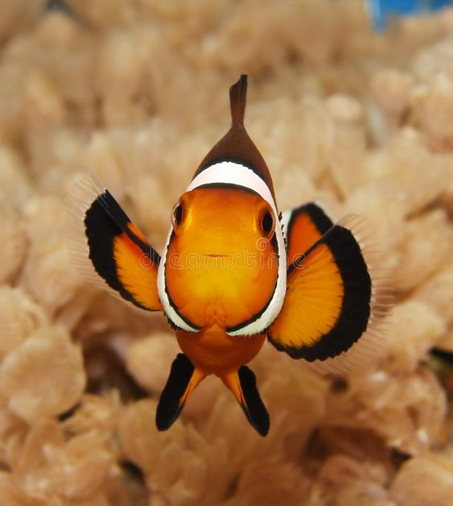
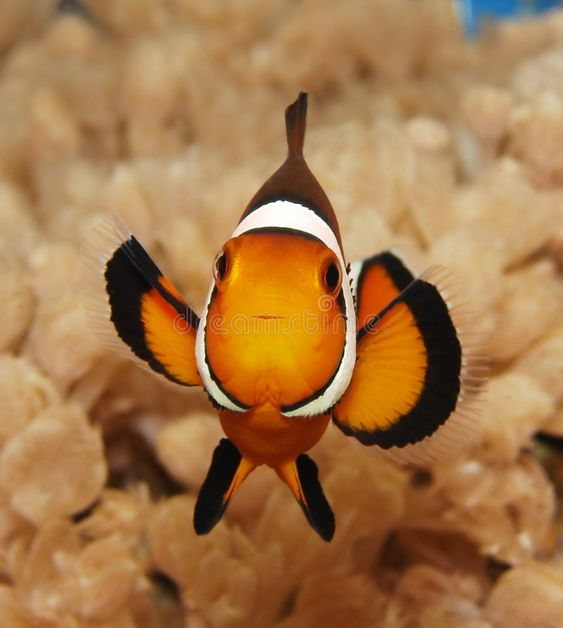
Paracanthurus hepatus is a species of Indo-Pacific surgeonfish. A popular fish in marine aquaria, it is the only member of the genus Paracanthurus. A number of common names are attributed to the species, including regal tang, palette surgeonfish, blue tang (leading to confusion with the Atlantic species Acanthurus coeruleus), royal blue tang, hippo tang, blue hippo tang, flagtail surgeonfish, Pacific regal blue tang, and blue surgeonfish.
Paracanthurus hepatus has a royal blue body, yellow tail, and black "palette" design. The lower body is yellow in the west-central Indian Ocean.It grows to 30 cm (12 in).Adults typically weigh around 600 g (21 oz) and males are generally larger than females. This fish is rather flat, like a pancake, with a circular body shape, a pointed snout-like nose, and small scales. The blue tang has nine dorsal spines, 26–28 dorsal soft rays, three anal spines, and 24–26 anal soft yellow rays.
The regal blue tang is of minor commercial fisheries importance; however, it is a bait fish. The flesh has a strong odor and is not highly prized. This fish may cause ciguatera poisoning if consumed by humans. However, regal blue tangs are collected commercially for the aquarium trade. Handling the tang risks the chances of being badly cut by the caudal spine. These spines, on both sides of the caudal peduncle, are extended from the body when the fish is stressed. The quick, thrashing sideways motion of the tail can produce deep wounds that result in swelling and discoloration, posing a risk of infection. It is believed that some species of Acanthurus have venom glands while others do not. The spines are used only as a method of protection against aggressors.Two sharp spines stick out at the caudal peduncle—the area where the tail joins the rest of the body.
The species is classified as Least concern by the IUCN, however it is threatened by overexploitation (mostly for the aquarium trade) and destructive fishing practices. Since it is dependent on fragile coral reef habitats, habitat destruction also constitutes a pressure in parts of its range.
In the 2003 Disney/Pixar film, Finding Nemo, one of the main characters, Dory (voiced by Ellen DeGeneres) is a regal blue tang suffering from short term memory loss. She and her parents, Jenny and Charlie (voiced by Diane Keaton and Eugene Levy), appear in the 2016 Disney/Pixar film sequel, Finding Dory.
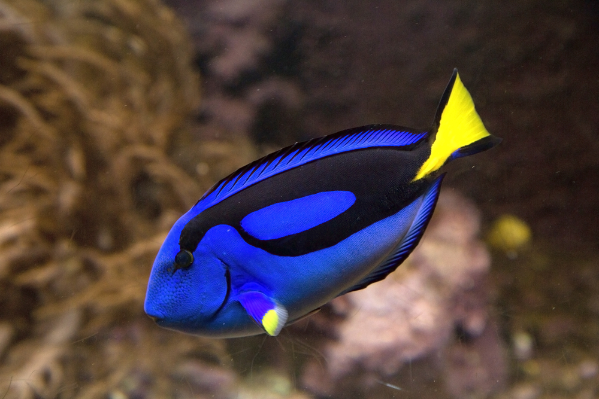 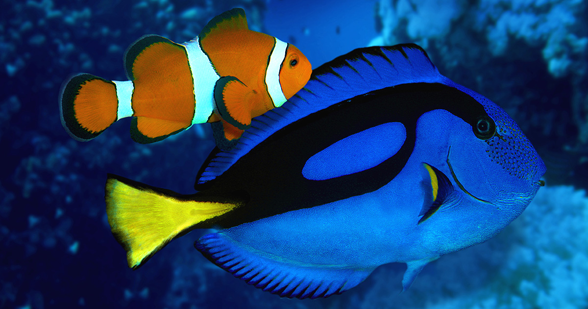The spotted eagle ray (Aetobatus narinari) is a cartilaginous fish of the eagle ray family, Myliobatidae. As traditionally recognized, it is found globally in tropical regions, including the Atlantic, Pacific and Indian Oceans. Recent authorities have restricted it to the Atlantic (including the Caribbean and Gulf of Mexico) with other populations recognized as the ocellated eagle ray (A. ocellatus) and Pacific white-spotted eagle ray (A. laticeps). Spotted eagle rays are most commonly seen alone, but occasionally swim in groups. They are ovoviviparous, the female retaining the eggs then releasing the young as miniature versions of the parent. This ray can be identified by its dark dorsal surface covered in white spots or rings. Near the base of the ray's relatively long tail, just behind the pelvic fins, are several venomous, barbed stingers. Spotted eagle rays commonly feed on small fish and crustaceans, and will sometimes dig with their snouts to look for food buried in the sand of the sea bed. These rays are commonly observed leaping out of the water, and on at least two occasions have been reported as having jumped into boats, in one incident resulting in the death of a woman in the Florida Keys. The spotted eagle ray is hunted by a wide variety of sharks. The rays are considered near threatened on the IUCN Red List. They are fished mainly in Southeast Asia and Africa, the most common market being in commercial trade and aquariums. They are protected in the Great Barrier Reef.
The spotted eagle ray was first described by Swedish botanist Bengt Anders Euphrasén as Raja narinari in 1790 from a specimen collected at an unknown location (possibly the coast of Brazil) during a trip he made to the Antilles, and was later classified as Stoasodon narinari. Its current genus name is Aetobatus, derived from the Greek words aetos (eagle) and batis (ray). The spotted eagle ray belongs to the Myliobatidae, which includes the well known manta ray. Most rays in the family Myliobatidae swim in the open ocean rather than close to the sea floor. Although traditionally considered to have a circumglobal distribution in tropical oceans throughout the world, recent authorities have restricted the true Aetobatus narinari to the Atlantic Ocean based on genetic and morphologic evidence. The Indo-Pacific population is Aetobatus ocellatus and the East Pacific is Aetobatus laticeps. The spotted eagle ray has many different common names, including white-spotted eagle ray, bonnet skate, bonnet ray, duckbill ray and spotted duck-billed ray.
The dorsal spots make the spotted eagle ray an aquarium attraction, although because of its large size it is likely kept only at public aquariums. There are no target fisheries for the spotted eagle ray, but it is often eaten after being caught unintentionally as bycatch.There have been several reported incidents of spotted eagle rays leaping out of the water onto boats and landing on people.Nevertheless, spotted eagle rays do not pose a significant threat to humans, as they are shy and generally avoid human contact. Interactions with an individual snorkeler in the Caribbean has been reported especially in Jamaica involving one, two and even three spotted eagle rays. The rays may exhibit a behavior similar to human curiosity which allows the snorkeler to observe the eagle ray who may slow down so as to share more time with the much slower human observer if the human observer appears to be unthreatening or interesting to the spotted eagle ray.
Spotted eagle rays, in common with many other rays, often fall victim to sharks such as the tiger shark, the lemon shark, the bull shark, the silver tip shark, and the great hammerhead shark. A great hammerhead shark has been observed attacking a spotted eagle ray in open water by taking a large bite out of one of its pectoral fins, thus incapacitating the ray. The shark then used its head to pin the ray to the bottom and pivoted to take the ray in its jaws, head first. Sharks have also been observed to follow female rays during the birthing season, and feed on the newborn pups. As other rays, spotted eagle rays are host to a variety of parasites. Internal parasites include the gnathostomatid nematode Echinocephalus sinensis in the spiral intestine. External parasites include the monocotylid monogeneans Decacotyle octona,Decacotyle elpora and Thaumatocotyle pseudodasybatis on the gills.
.jpeg)


Tetraodontidae is a family of primarily marine and estuarine fish of the order Tetraodontiformes. The family includes many familiar species variously called pufferfish, puffers, balloonfish, blowfish, blowies, bubblefish, globefish, swellfish, toadfish, toadies, honey toads, sugar toads, and sea squab. They are morphologically similar to the closely related porcupinefish, which have large external spines (unlike the thinner, hidden spines of the Tetraodontidae, which are only visible when the fish have puffed up). The scientific name refers to the four large teeth, fused into an upper and lower plate, which are used for crushing the hard shells of crustaceans and mollusks, their natural prey.
They are typically small to medium in size, although a few species can reach lengths greater than 50 cm (20 in).
They are most diverse in the tropics, relatively uncommon in the temperate zone, and completely absent from cold waters.
The tetraodontids have been estimated to have diverged from diodontids between 89 and 138 million years ago. The four major clades diverged during the Cretaceous between 80 and 101 million years ago. The oldest known pufferfish genus is Eotetraodon, from the Lutetian epoch of Middle Eocene Europe, with fossils found in Monte Bolca and the Caucasus Mountains. The Monte Bolca species, E. pygmaeus, coexisted with several other tetraodontiforms, including an extinct species of diodontid, primitive boxfish (Proaracana and Eolactoria), and other, totally extinct forms, such as Zignoichthys and the spinacanthids. The extinct genus, Archaeotetraodon is known from Miocene-aged fossils from Europe.
Pufferfish can be lethal if not served properly. Puffer poisoning usually results from consumption of incorrectly prepared puffer soup, fugu chiri, or occasionally from raw puffer meat, sashimi fugu. While chiri is much more likely to cause death, sashimi fugu often causes intoxication, light-headedness, and numbness of the lips. Pufferfish tetrodotoxin deadens the tongue and lips, and induces dizziness and vomiting, followed by numbness and prickling over the body, rapid heart rate, decreased blood pressure, and muscle paralysis. The toxin paralyzes the diaphragm muscle and stops the person who has ingested it from breathing. People who live longer than 24 hours typically survive, although possibly after a coma lasting several days. The source of tetrodotoxin in puffers has been a matter of debate, but it is increasingly accepted that bacteria in the fish's intestinal tract are the source. Saxitoxin, the cause of paralytic shellfish poisoning and red tide, can also be found in certain puffers.
In September 2012, the Bureau of Fisheries and Aquatic Resources in the Philippines issued a warning not to eat puffer fish, after local fishermen died upon consuming puffer fish for dinner. The warning indicated that puffer fish toxin is 100 times more potent than cyanide.
Pufferfish, called pakapao in Thailand, are usually consumed by mistake. They are often cheaper than other fish, and because they contain inconsistent levels of toxins between fish and season, there is little awareness or monitoring of the danger. Consumers are regularly hospitalized and some even die from the poisoning.
Cases of neurological symptoms, including numbness and tingling of the lips and mouth, have been reported to rise after the consumption of puffers caught in the area of Titusville, Florida, USA. The symptoms generally resolve within hours to days, although one affected individual required intubation for 72 hours.As a result, Florida banned the harvesting of puffers from certain bodies of water.
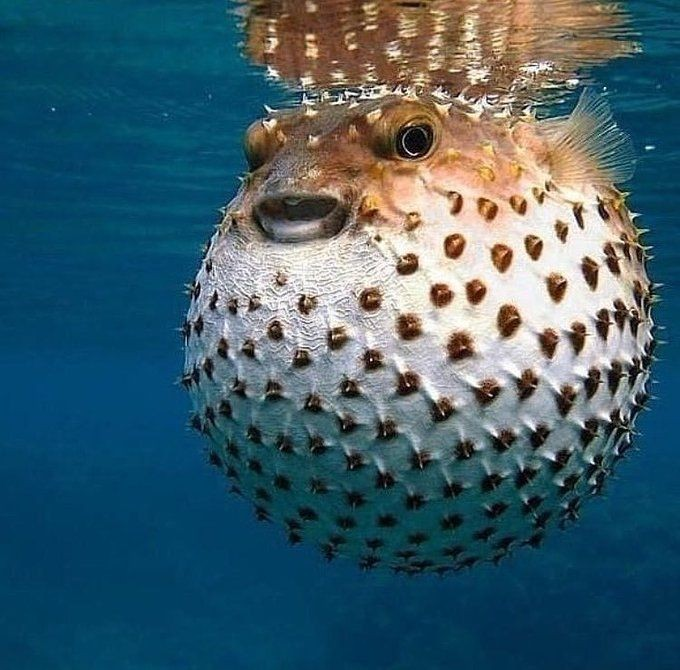 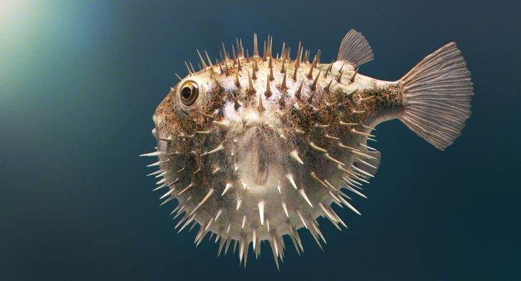 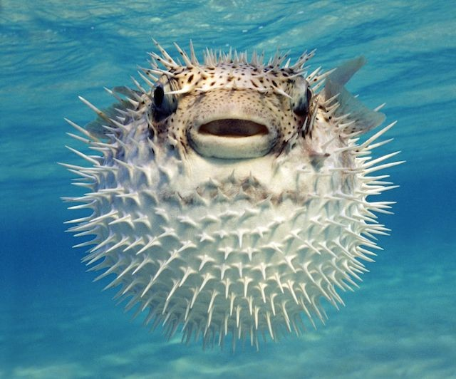The great white shark (Carcharodon carcharias), also known as the white shark, white pointer, or simply great white, is a species of large mackerel shark which can be found in the coastal surface waters of all the major oceans. It is notable for its size, with larger female individuals growing to 6.1 m (20 ft) in length and 1,905–2,268 kg (4,200–5,000 lb) in weight at maturity. However, most are smaller; males measure 3.4 to 4.0 m (11 to 13 ft), and females measure 4.6 to 4.9 m (15 to 16 ft) on average.According to a 2014 study, the lifespan of great white sharks is estimated to be as long as 70 years or more, well above previous estimates, making it one of the longest lived cartilaginous fishes currently known. According to the same study, male great white sharks take 26 years to reach sexual maturity, while the females take 33 years to be ready to produce offspring.Great white sharks can swim at speeds of 25 km/hr (16 mph) for short bursts and to depths of 1,200 m (3,900 ft).
In great white sharks, sexual dimorphism is present, and females are generally larger than males. Male great whites on average measure 3.4 to 4.0 m (11 to 13 ft) long, while females at 4.6 to 4.9 m (15 to 16 ft). Adults of this species weigh 522–771 kg (1,151–1,700 lb) on average; however, mature females can have an average mass of 680–1,110 kg (1,500–2,450 lb).The largest females have been verified up to 6.1 m (20 ft) in length and an estimated 1,905 kg (4,200 lb) in weight, perhaps up to 2,268 kg (5,000 lb).The maximum size is subject to debate because some reports are rough estimations or speculations performed under questionable circumstances. Among living cartilaginous fish, only the whale shark (Rhincodon typus), the basking shark (Cetorhinus maximus) and the giant manta ray (Manta birostris), in that order, are on average larger and heavier. These three species are generally quite docile in disposition and given to passively filter-feeding on very small organisms. This makes the great white shark the largest extant macropredatory fish. Great white sharks are at around 1.2 m (3.9 ft) when born, and grow about 25 cm (9.8 in) each year.
This shark's behaviour and social structure are complex.In South Africa, white sharks have a dominance hierarchy depending on the size, sex and squatter's rights: Females dominate males, larger sharks dominate smaller sharks, and residents dominate newcomers. When hunting, great whites \tend to separate and resolve conflicts with rituals and displays. White sharks rarely resort to combat although some individuals have been found with bite marks that match those of other white sharks. This suggests that when a great white approaches too closely to another, they react with a warning bite. Another possibility is that white sharks bite to show their dominance.
Of all shark species, the great white shark is responsible for by far the largest number of recorded shark bite incidents on humans, with 272 documented unprovoked bite incidents on humans as of 2012. More than any documented bite incident, Peter Benchley's best-selling novel Jaws and the subsequent 1975 film adaptation directed by Steven Spielberg provided the great white shark with the image of being a "man-eater" in the public mind.While great white sharks have killed humans in at least 74 documented unprovoked bite incidents, they typically do not target them: for example, in the Mediterranean Sea there have been 31 confirmed bite incidents against humans in the last two centuries, most of which were non-fatal. Many of the incidents seemed to be "test-bites". Great white sharks also test-bite buoys, flotsam, and other unfamiliar objects, and they might grab a human or a surfboard to identify what it is. Contrary to popular belief, great white sharks do not mistake humans for seals. Many bite incidents occur in waters with low visibility or other situations which impair the shark's senses. The species appears to not like the taste of humans, or at least finds the taste unfamiliar. Further research shows that they can tell in one bite whether or not the object is worth predating upon. Humans, for the most part, are too bony for their liking. They much prefer seals, which are fat and rich in protein. Humans are not appropriate prey because the shark's digestion is too slow to cope with a human's high ratio of bone to muscle and fat. Accordingly, in most recorded shark bite incidents, great whites broke off contact after the first bite. Fatalities are usually caused by blood loss from the initial bite rather than from critical organ loss or from whole consumption. From 1990 to 2011 there have been a total of 139 unprovoked great white shark bite incidents, 29 of which were fatal. However, some researchers have hypothesized that the reason the proportion of fatalities is low is not that sharks do not like human flesh, but because humans are often able to escape after the first bite. In the 1980s, John McCosker, chair of aquatic biology at the California Academy of Sciences, noted that divers who dove solo and were bitten by great whites were generally at least partially consumed, while divers who followed the buddy system were generally rescued by their companion. McCosker and Timothy C. Tricas, an author and professor at the University of Hawaii, suggest that a standard pattern for great whites is to make an initial devastating attack and then wait for the prey to weaken before consuming the wounded animal. Humans' ability to move out of reach with the help of others, thus foiling the attack, is unusual for a great white's prey.
Shark culling is the deliberate killing of sharks by a government in an attempt to reduce shark attacks; shark culling is often called "shark control". These programs have been criticized by environmentalists and scientists—they say these programs harm the marine ecosystem; they also say such programs are "outdated, cruel, and ineffective".[150] Many different species (dolphins, turtles, etc.) are also killed in these programs (because of their use of shark nets and drum lines)—15,135 marine animals were killed in New South Wales' nets between 1950 and 2008, and 84,000 marine animals were killed by Queensland authorities from 1962 to 2015. Great white sharks are currently killed in both Queensland and New South Wales in "shark control" (shark culling) programs.[149] Queensland uses shark nets and drum lines with baited hooks, while New South Wales only uses nets. From 1962 to 2018, Queensland authorities killed about 50,000 sharks, many of which were great whites. From 2013 to 2014 alone, 667 sharks were killed by Queensland authorities, including great white sharks.In Queensland, great white sharks found alive on the drum lines are shot. In New South Wales, between 1950 and 2008, a total of 577 great white sharks were killed in nets.Between September 2017 and April 2018, fourteen great white sharks were killed in New South Wales.
Great white sharks infrequently bite and sometimes even sink boats. Only five of the 108 authenticated unprovoked shark bite incidents reported from the Pacific Coast during the 20th century involved kayakers. In a few cases they have bitten boats up to 10 m (33 ft) in length. They have bumped or knocked people overboard, usually biting the boat from the stern. In one case in 1936, a large shark leapt completely into the South African fishing boat Lucky Jim, knocking a crewman into the sea. Tricas and McCosker's underwater observations suggest that sharks are attracted to boats by the electrical fields they generate, which are picked up by the ampullae of Lorenzini and confuse the shark about whether or not wounded prey might be nearby.


 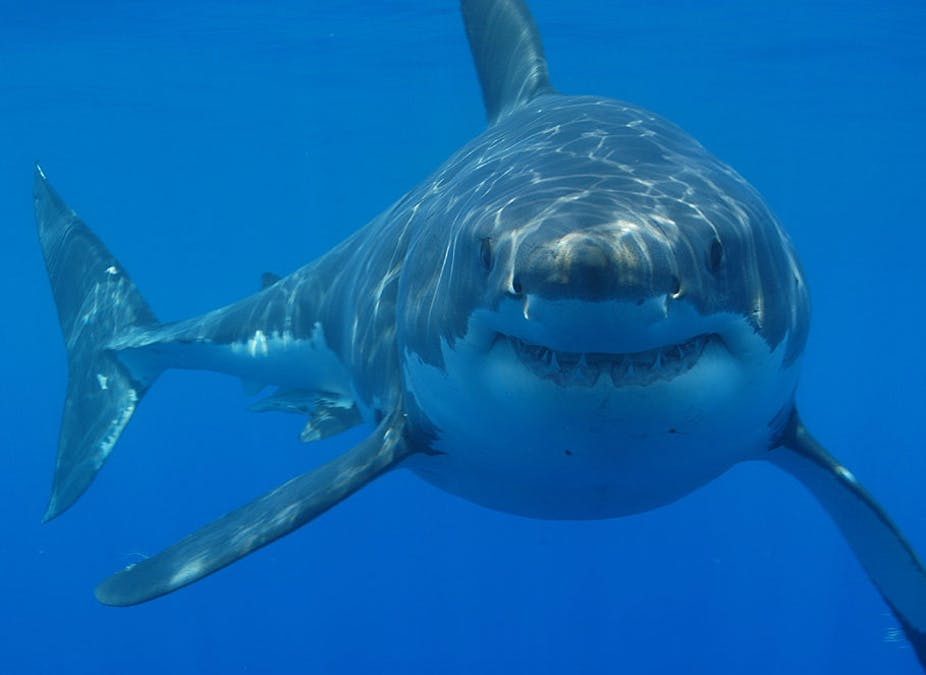
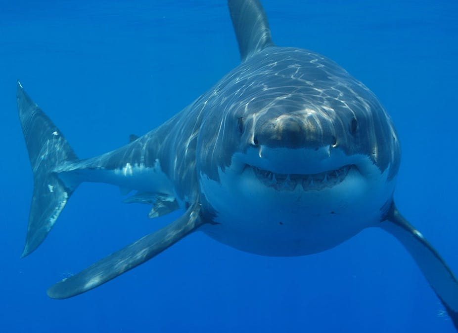
The hammerhead sharks are a group of sharks that form the family Sphyrnidae, so named for the unusual and distinctive structure of their heads, which are flattened and laterally extended into a "hammer" shape called a cephalofoil. Most hammerhead species are placed in the genus Sphyrna, while the winghead shark is placed in its own genus, Eusphyra. Many, but not necessarily mutually exclusive, functions have been postulated for the cephalofoil, including sensory reception, manoeuvering, and prey manipulation. The cephalofoil gives the shark superior binocular vision and depth perception.
The known species range from 0.9 to 6.0 m (2 ft 11 in to 19 ft 8 in) in length and weigh from 3 to 580 kg (6.6 to 1,278.7 lb).They are usually light gray and have a greenish tint. Their bellies are white, which allows them to blend into the background when viewed from below, and sneak up on their prey. Their heads have lateral projections that give them a hammer-like shape. While overall similar, this shape differs somewhat between species; e.g., a distinct T-shape in the great hammerhead, a rounded head with a central notch in the scalloped hammerhead, and an unnotched rounded head in the smooth hammerhead. Hammerheads have disproportionately small mouths compared to other shark species. They are also known to form schools during the day, sometimes in groups over 100. In the evening, like other sharks, they become solitary hunters. National Geographic explains that hammerheads can be found in warm, tropical waters, but during the summer, they participate in a mass migration to search for cooler waters.
Hammerhead sharks eat a large range of prey such as fish (including other sharks), squid, octopus, and crustaceans. Stingrays are a particular favorite. These sharks are often found swimming along the bottom of the ocean, stalking their prey. Their unique heads are used as a weapon when hunting down prey. The hammerhead shark uses its head to pin down stingrays and eats the ray when the ray is weak and in shock.The great hammerhead, tending to be larger and more aggressive than most hammerheads, occasionally engages in cannibalism, eating other hammerhead sharks, including its own young. In addition to the typical animal prey, bonnetheads have been found to feed on seagrass, which sometimes makes up as much as half their stomach contents. They may swallow it unintentionally, but they are able to partially digest it. This is the only known case of a potentially omnivorous species of shark.
According to the International Shark Attack File, humans have been subjects of 17 documented, unprovoked attacks by hammerhead sharks within the genus Sphyrna since 1580 AD. No human fatalities have been recorded. The great and the scalloped hammerheads are listed on the World Conservation Union's (IUCN) 2008 Red List as endangered, whereas the smalleye hammerhead is listed as vulnerable. The status given to these sharks is as a result of overfishing and demand for their fins, an expensive delicacy. Among others, scientists expressed their concern about the plight of the scalloped hammerhead at the American Association for the Advancement of Science annual meeting in Boston. The young swim mostly in shallow waters along shores all over the world to avoid predators. Shark fins are prized as a delicacy in certain countries in Asia (such as China), and overfishing is putting many hammerhead sharks at risk of extinction. Fishermen who harvest the animals typically cut off the fins and toss the remainder of the fish, which is often still alive, back into the sea.This practice, known as finning, is lethal to the shark.
Among Torres Strait Islanders, the hammerhead shark, known as the beizam, is a common family totem and often represented in cultural artefacts such as the elaborate headdresses worn for ceremonial dances, known as dhari or dari. They are associated with law and order.[40] Renowned artist Ken Thaiday Snr is known for his representations of beizam in his sculptural dari and other works.

.jpeg)

Koi is an informal name for the colored variants of C. rubrofuscus kept for ornamental purposes. There are many varieties of ornamental koi, originating from breeding that began in Niigata, Japan in the early 19th century.Several varieties are recognized by the Japanese, distinguished by coloration, patterning, and scalation. Some of the major colors are white, black, red, orange, yellow, blue, brown and cream. The most popular category of koi is the Gosanke, which is made up of the Kohaku, Taisho Sanshoku, and Showa Sanshoku varieties.
Carp are a large group of fish originally found in Central Europe and Asia. Various carp species were originally domesticated in East Asia, where they were used as food fish. Carp are coldwater fish, and their ability to survive and adapt to many climates and water conditions allowed the domesticated species to be propagated to many new locations, including Japan. Natural color mutations of these carp would have occurred across all populations. Carp were first bred for color mutations in China more than a thousand years ago, where selective breeding of the Prussian carp (Carassius gibelio) led to the development of the goldfish (Carassius auratus). The Amur carp (Cyprinus rubrofuscus), a member of the cyprinid family species complex native to East Asia. Amur carp were previously identified as a subspecies of the common carp (as C. c. haematopterus), but recent authorities treat it as a separate species under the name C. rubrofuscus.Amur carp have been aquacultured as a food fish at least as long ago as the fifth century BC in China. Jin Dynasty (fourth century AD) texts mentioned carp of various colors.The oldest record on colored carp in Japan is found in the Japanese history book Nihon Shoki (Chronicles of Japan) completed in 720. According to the Nihon shoki, it is recorded that Emperor Keikō praised colored carp in a pond in the Mino region in 94 and that Emperor Suiko saw them in the garden of Soga no Umako's residence in 620. The systematic breeding of ornamental koi in Japan began in Ojiya and Yamakoshi in the Niigata Prefecture (located on the northeastern coast of Honshu) in the 1820s. Selective breeding gave rise first to red carp, then to pale blue Asagi and white, red, and yellow Bekkou. The Sarasa variety, with a red on white pattern, was created around 1830. Later, a yellow-based Ki uturi variety was born. From this original handful of koi varieties, all other Nishikigoi varieties were bred, with the exception of the Ogon variety (single-colored, metallic koi), which was developed relatively recently. The outside world was unaware of the development of color variations in Japanese koi until 1914 when the Niigata koi were exhibited at an annual exposition in Tokyo. From that time, interest in koi spread throughout Japan. The number of varieties continued to grow, and repeated cross-breeding gave rise to more flashy varieties, such as Kōhaku , Taishō Sanshoku and Shōwa Sanshoku. The hobby of keeping koi eventually spread worldwide. They are sold in many pet aquarium shops, with higher-quality fish available from specialist dealers.Collecting koi has become a social hobby. Passionate hobbyists join clubs, share their knowledge and help each other with their koi.[13] In particular, since the 21st century, some wealthy Chinese have imported large quantities of koi from Niigata in Japan, and the price of high-quality carp has soared. In 2018, one carp was bought by a Chinese collector for about $2 million, the highest price ever. There are also cases in which purchased carp are bred in China and sold to foreign countries, and many breeds are spreading all over the world. Etymology The words "koi" and "nishikigoi" come from the Japanese words 鯉 (carp), and 錦鯉 (brocaded carp), respectively. In Japanese, "koi" is a homophone for 恋, another word that means "affection" or "love", so koi are symbols of love and friendship in Japan. Colored ornamental carp were originally called Irokoi (色鯉) meaning colored carp, Hanakoi (花鯉) meaning floral carp, and Moyōkoi (模様鯉) meaning patterned carp. There are various theories as to how these words came to be disused, in favor of Nishikigoi (錦鯉), which is used today. One theory holds that, during World War II, the words Irokoi and Hanakoi (which can have sexual meanings) were changed to Nishikigoi because they were not suitable for the social situation of war. Another theory is that Nisikigoi, which was the original name for the popular Taisho Sanshoku variety, gradually became the term used for all ornamental koi.
Goldfish (金魚) were developed in China more than a thousand years ago by selectively breeding Prussian carp for color mutations. By the Song dynasty (960–1279), yellow, orange, white, and red-and-white colorations had been developed. Goldfish (Carassius auratus) and Prussian carp (Carassius gibelio) are now considered different species. Goldfish were introduced to Japan in the 16th century and to Europe in the 17th century. On the other hand, most ornamental koi breeds currently distributed worldwide originate from Amur carp (Cyprinus rubrofuscus) bred in Japan in the first half of the 19th century. Koi are domesticated Amur carp that are selected or culled for olor; they are not a different species, but a subspecies, and will revert to the original coloration within a few generations if allowed to breed freely. In general, goldfish tend to be smaller than koi, and have a greater variety of body shapes and fin and tail configurations. Goldfish usually only grow to about 35 centimetres (14 in). Koi can grow up to about 100 centimetres (39 in) in length; on average they also grow about 2 centimetres (0.79 in) per month Koi varieties tend to have a common body shape, but have a greater variety of coloration and color patterns. They also have prominent barbels on the lip. Some goldfish varieties, such as the common goldfish, comet goldfish, and shubunkin, have body shapes and coloration that are similar to koi, and can be difficult to tell apart from koi when immature. Goldfish and koi can interbreed; however, as they were developed from different species of carp, their offspring are sterile.

 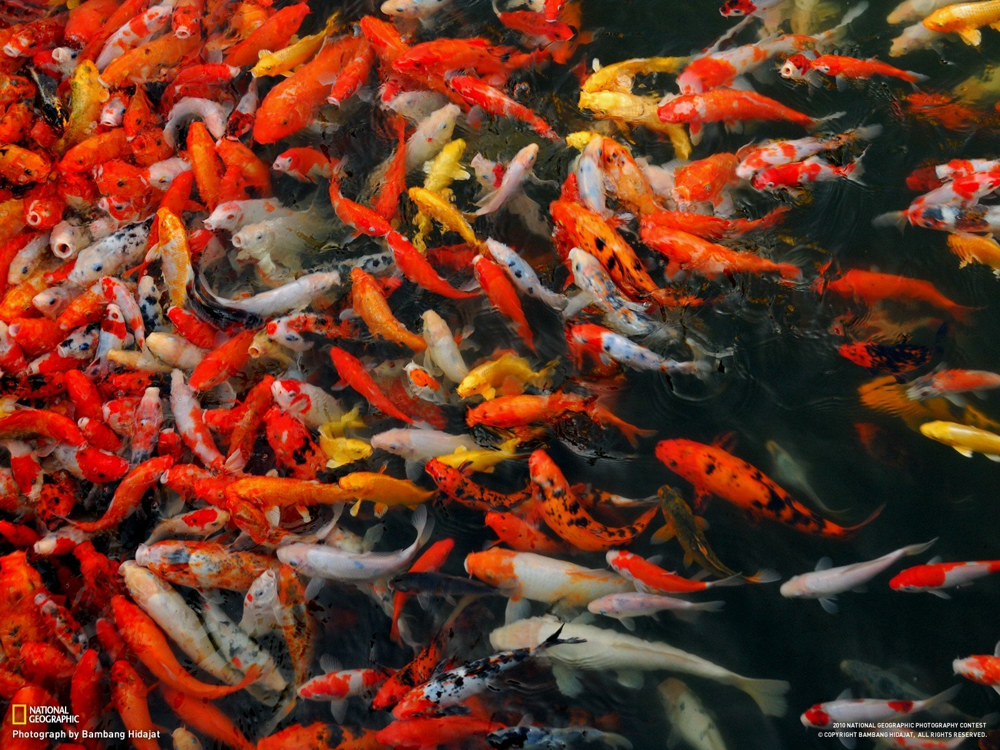
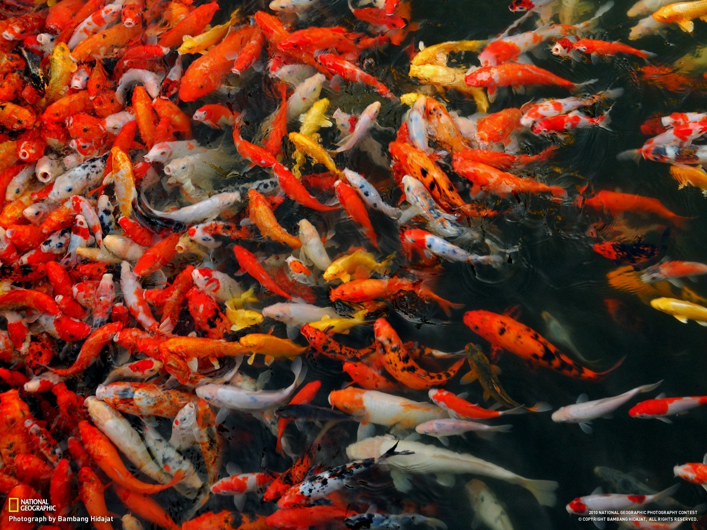

 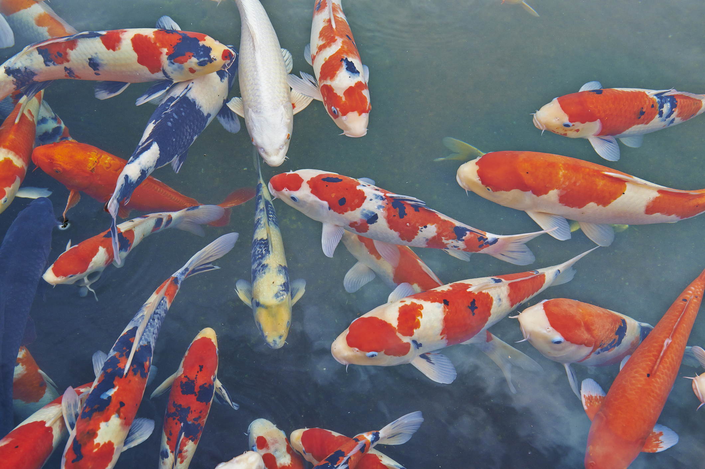
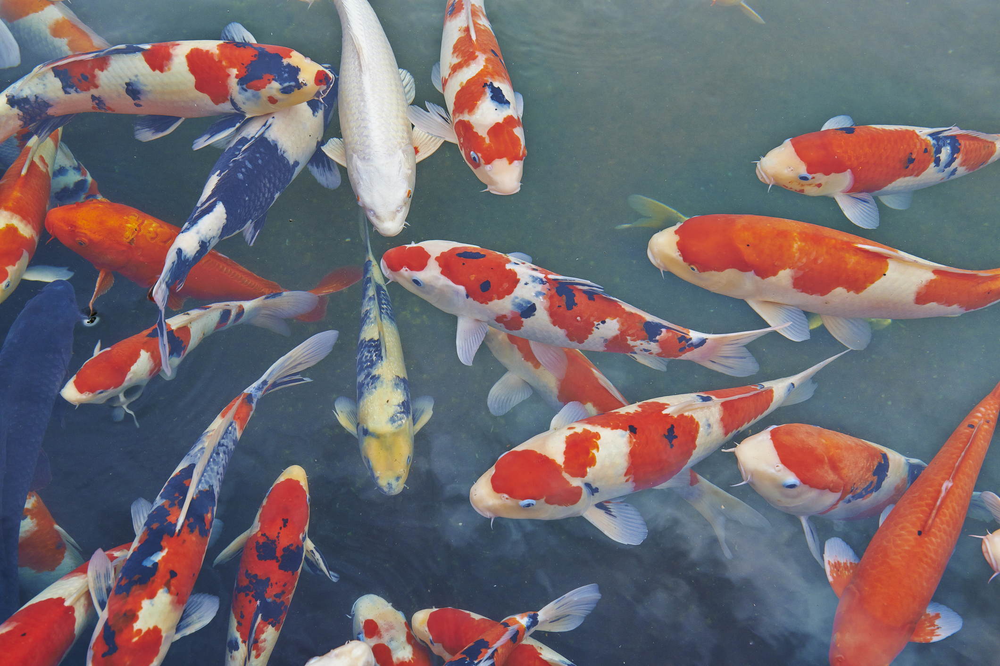